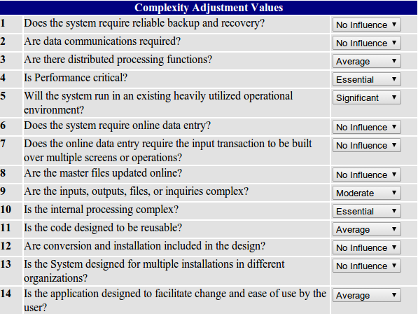
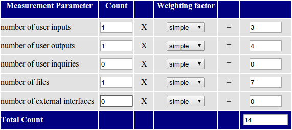
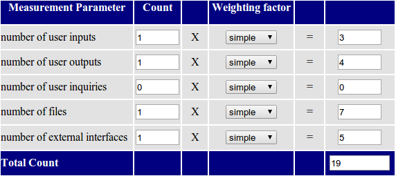
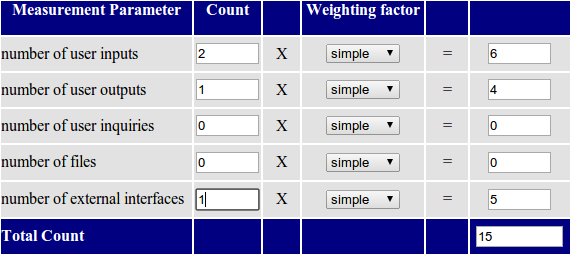
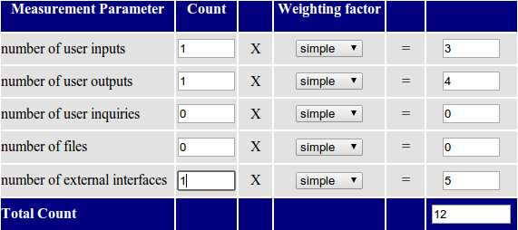
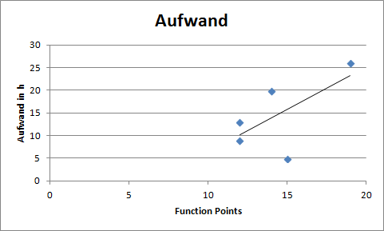

Revision History
|
Date |
Version |
Description |
Author |
|
<10/Apr/14> |
1.0 |
Ersterstellung |
Mario W., Benedikt B. |
|
|
|
|
|
|
|
|
|
|
|
|
|
|
|
Table of Contents
Function Points
1. Einführung
Function Points sind eine Größe, die die Komplexität von Software repräsentiert. Sie sind unabhängig von der Programmiersprache und fassen viele Faktoren, wie z.B. Eingänge und Ausgänge in einer Zahl zusammen. Mit ihrer Hilfe können aus bereits implementierten Projekten bzw. Use Cases Abschätzungen von Kenngrößen wie Aufwand und Lines of Code (LOC) für noch folgende Projekte bzw. Use Cases erstellt werden
1.1 Bestimmung
Zur Bestimmung werden die Anzahl der Internal Logical Files (ILF), External Interface Files (EIF) External Inputs (EI), External Output (EO) und External Inquiries (EI) gewichtet miteinander verrechnet. Die Gewichtung wird über die Komplexität festgelegt.
1.2 Einschränkungen
Function Points wurden für Programme mit Datenbankanbindung konzipiert. Programme mit komplexer Kommunikation zwischen mehreren Teilnehmern, aber ohne Datenbank erhalten nur wenige Funktion Points, obwohl sie trotzdem sehr komplex sind.
2. Berechnung
2.1 Complexity Adjustment

2.2 Use Case 1: customize A1

“User Inputs” besitzt nur ein DET, daher ist der Gewichtungsfaktor simple. „User outpus“ besitzt nur ein DET, daher ist der Gewichtungsfaktor ebenfalls simple. „Files“: Es gibt eine Datei mit globalen Einstellungen (die Applikation betreffend) sogenannte Shared Preferences. Da es sich um keine Datenbank handelt, ist der Gewichtungsfaktor „simple“ gewählt worden.
2.3 Use Case2: Tuner

„User inputs“ erhält den Gewichtungsfaktor simple, da ein DET damit verbunden ist. „User outputs“ wird ebenfalls mit simple gewichtet; es ist ebenfalls ein DET zugeordnet. „Files“: wie bei UC1 werden die Shared Preferences genutzt. „External interfaces“: Der Mikrofon-Input wird genutzt. Das entspricht einem DET.
2.4 Use Case3: tuneBySound

„User inputs“ erhält den Gewichtungsfaktor simple, da ein DET damit verbunden ist. „User outputs“ wird ebenfalls mit simple gewichtet; es ist ebenfalls ein DET zugeordnet. „Files“: wie bei UC1 werden die Shared Preferences genutzt. „External interfaces“: Der Lautsprecher wird als Ausgabe genutzt. Das entspricht einem DET.
2.5 Use Case4: selectBPM

„User inputs“ erhält den Gewichtungsfaktor simple, da ein DET damit verbunden ist. „User outputs“ wird ebenfalls mit simple gewichten; es ist ebenfalls ein DET zugeordnet. „External interfaces“: Der Lautsprecher wird als Output genutzt genutzt. Das entspricht einem DET.
2.5 Use Case5: selectBarType

„User inputs“ erhält den Gewichtungsfaktor simple, da ein DET damit verbunden ist. „User outputs“ wird ebenfalls mit simple gewichten; es ist ebenfalls ein DET zugeordnet. „External interfaces“: Der Mikrofon-Input wird genutzt. Das entspricht einem DET.
3. Diagramm

Obiges Diagramm zeigt den Implementierungsaufwand über den Function Points an. Die zwei vorher beschriebenen, schon implementierten Use Cases sind als blaue Rauten eingezeichnet. Die schwarze Gerade ist die Annäherung an unsere Aufwands- Function Points Beziehung. Durch diese Gerade kann der Aufwand von noch nicht implementierten Use Cases anhand der berechneten Function Points abgeschätzt werden.